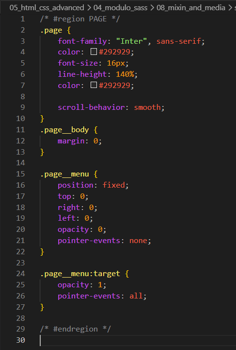
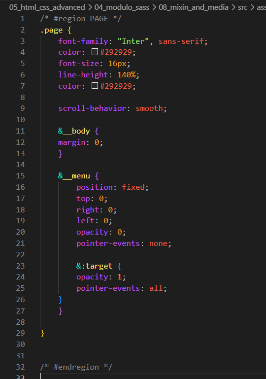
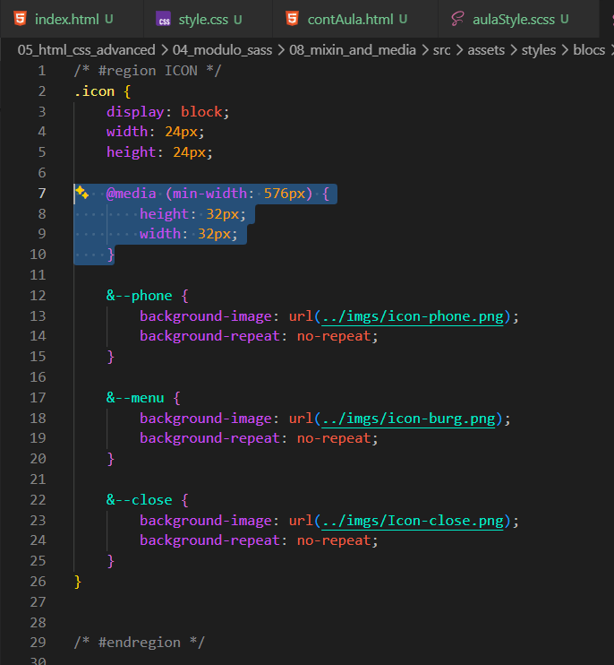

@mixin_and_@media
Intro
Agora que configuramos a montagem do projeto SASS, podemos baixar nosso projeto landing para podermos praticar.
Agora que configuramos a montagem do projeto SASS, podemos baixar nosso projeto landing para podermos praticar.
Iremos comecar utilizando do embedding:


O mesmo foi feito com o restante de nosso CSS para SCSS com o uso de embedding.
Agora iremos fazer algumas alteracoes de responsividade para tablets.
Em nosso icon.scss iremos fazer uma requisicao de @media, antes no CSS faziamos separadamente, porem o SASS suporta em embedding. Ficara da seguinte forma:
